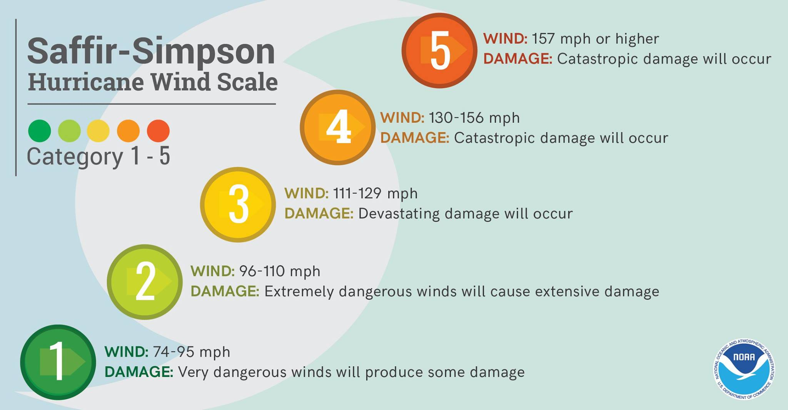

A tropical cyclone is a rapidly rotating storm system characterized by a low-pressure center, a closed low-level atmospheric circulation, strong winds, and a spiral arrangement of thunderstorms that produce heavy rain. Depending on its location and strength, a tropical cyclone is referred to by different names, including hurricane, typhoon, tropical storm, cyclonic storm, tropical depression, and simply cyclone. A hurricane is a tropical cyclone that occurs in the Atlantic Ocean and northeastern Pacific Ocean, and a typhoon occurs in the northwestern Pacific Ocean; while in the south Pacific "tropical cyclones" or "severe cyclonic storms".
To be classified as a hurricane, a tropical cyclone must have one-minute maximum sustained winds of at least 74 mph (33 m/s; 64 kn; 119 km/h) (Category 1). The highest classification in the scale, Category 5, consists of storms with sustained winds over 156 mph (70 m/s; 136 kn; 251 km/h). The classifications can provide some indication of the potential damage and flooding a hurricane will cause upon landfall.
Officially, the Saffir–Simpson hurricane wind scale is based on the highest average wind over a one- minute time span and used only to describe hurricanes that form in the Atlantic Ocean and northern Pacific Ocean east of the International Date Line. Other areas use different scales to label these storms, which are called cyclones or typhoons, depending on the area. These areas (except the JTWC) use three-minute or ten-minute averaged winds to determine the maximum sustained winds—which is an important difference and makes direct comparison with storms scaled with the Saffir–Simpson method difficult.
Hurricane Sandy (unofficially referred to as Superstorm Sandy) was the deadliest and most destructive hurricane of the 2012 Atlantic hurricane season. Inflicting nearly $70 billion (2012 USD) in damage, it was the second-costliest hurricane on record in the United States until surpassed by Hurricanes Harvey and Maria in 2017. The eighteenth named storm, tenth hurricane, and second major hurricane of the year, Sandy was a Category 3 storm at its peak intensity when it made landfall in Cuba. While it was a Category 2 hurricane off the coast of the Northeastern United States, the storm became the largest Atlantic hurricane on record (as measured by diameter, with tropical-storm-force winds spanning 900 miles (1,400 km)). At least 233 people were killed along the path of the storm in eight countries.
Sandy developed from a tropical wave in the western Caribbean Sea on October 22, quickly strengthened, and was upgraded to Tropical Storm Sandy six hours later. Sandy moved slowly northward toward the Greater Antilles and gradually intensified. On October 24, Sandy became a hurricane, made landfall near Kingston, Jamaica, re-emerged a few hours later into the Caribbean Sea and strengthened into a 4 Category 2 hurricane. On October 25, Sandy hit Cuba as a Category 3 hurricane, then weakened to a 4 Category 1 hurricane. Early on October 26, Sandy moved through the Bahamas. On October 27, Sandy briefly weakened to a tropical storm and then restrengthened to a Category 1 hurricane. Early on October 29, Sandy curved west-northwest (the "left turn" or "left hook") and then moved ashore near Brigantine, New Jersey, just to the northeast of Atlantic City, as a post-tropical cyclone with hurricane-force winds.
In Jamaica, winds left 70% of residents without electricity, blew roofs off buildings, killed one person, and caused about $100 million (2012 USD) in damage. Sandy's outer bands brought flooding to Haiti, killing at least 54, causing food shortages, and leaving about 200,000 homeless; the hurricane also caused two deaths in the Dominican Republic. In Puerto Rico, one man was swept away by a swollen river. In Cuba, there was extensive coastal flooding and wind damage inland, destroying some 15,000 homes, killing 11, and causing $2 billion (2012 USD) in damage. Sandy caused two deaths and an estimated $700 million (2012 USD) in damage in The Bahamas.
In the United States, Hurricane Sandy affected 24 states, including the entire eastern seaboard from Florida to Maine and west across the Appalachian Mountains to Michigan and Wisconsin, with particularly severe damage in New Jersey and New York. Its storm surge hit New York City on October 29, flooding streets, tunnels and subway lines and cutting power in and around the city. Damage in the United States amounted to $65 billion (2012 USD). In Canada, two were killed in Ontario, and the storm caused an estimated $100 million (2012 CAD) in damage throughout Ontario and Quebec.
Hurricane Katrina was an extremely destructive and deadly Category 5 hurricane that made landfall on Florida and Louisiana, particularly the city of New Orleans and the surrounding areas, in August 2005, causing catastrophic damage from central Florida to eastern Texas. Subsequent flooding, caused largely as a result of fatal engineering flaws in the flood protection system known as levees around the city of New Orleans, precipitated most of the loss of lives. The storm was the third major hurricane of the record-breaking 2005 Atlantic hurricane season, as well as the fourth-most intense Atlantic hurricane on record to make landfall in the United States, behind only the 1935 Labor Day hurricane, Hurricane Camille in 1969, and Hurricane Michael in 2018.
The storm originated over the Bahamas on August 23, 2005, from the merger of a tropical wave and the remnants of Tropical Depression Ten. Early on the following day, the tropical depression then intensified into a tropical storm as it headed generally westward toward Florida, strengthening into a hurricane only two hours before making landfall at Hallandale Beach and Aventura on August 25. After very briefly weakening again to a tropical storm, Katrina emerged into the Gulf of Mexico on August 26 and began to rapidly intensify. The storm strengthened into a Category 5 hurricane over the warm waters of the Gulf, but weakened before making its second landfall as a Category 3 hurricane on August 29, over southeast Louisiana and Mississippi. As Katrina made landfall, its front right quadrant, which held the strongest winds, slammed into Gulfport, Mississippi, devastating it.
Overall, at least 1,836 people died in the hurricane and subsequent floods, making Katrina the deadliest United States hurricane since the 1928 Okeechobee hurricane. Severe property damage occurred in numerous coastal areas, such as Mississippi beachfront towns where boats and casino barges rammed buildings, pushing cars and houses inland; water reached 6–12 miles (10–19 km) from the beach. Total property damage was estimated at $125 billion (2005 USD), roughly four times the damage wrought by Hurricane Andrew in 1992, tying Katrina with Hurricane Harvey of 2017 as the costliest Atlantic tropical cyclone on record.
Over fifty breaches in surge protection levees surrounding the city of New Orleans, Louisiana were the cause of the majority of the death and destruction during Katrina. Eventually 80% of the city, as well as large tracts of neighboring parishes, became flooded, and the floodwaters lingered for weeks. Most of the transportation and communication networks servicing New Orleans were damaged or disabled by the flooding, and tens of thousands of people who had not evacuated the city prior to landfall became stranded with little access to food, shelter or basic necessities. The scale of the disaster in New Orleans provoked massive national and international response efforts; federal, local and private rescue operations evacuated displaced persons out of the city over the following weeks. Multiple investigations in the aftermath of the storm concluded that the U.S. Army Corps of Engineers, which had designed and built the region's levees decades earlier, was responsible for the failure of the flood-control systems, though federal courts later ruled that the Corps could not be held financially liable because of sovereign immunity in the Flood Control Act of 1928.